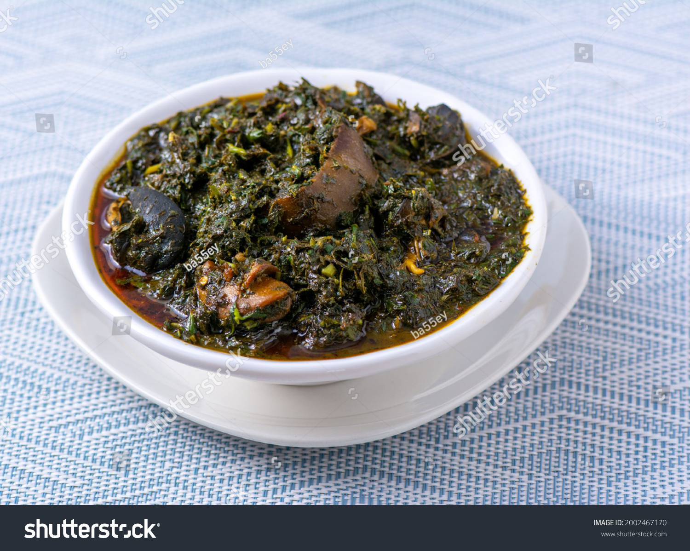
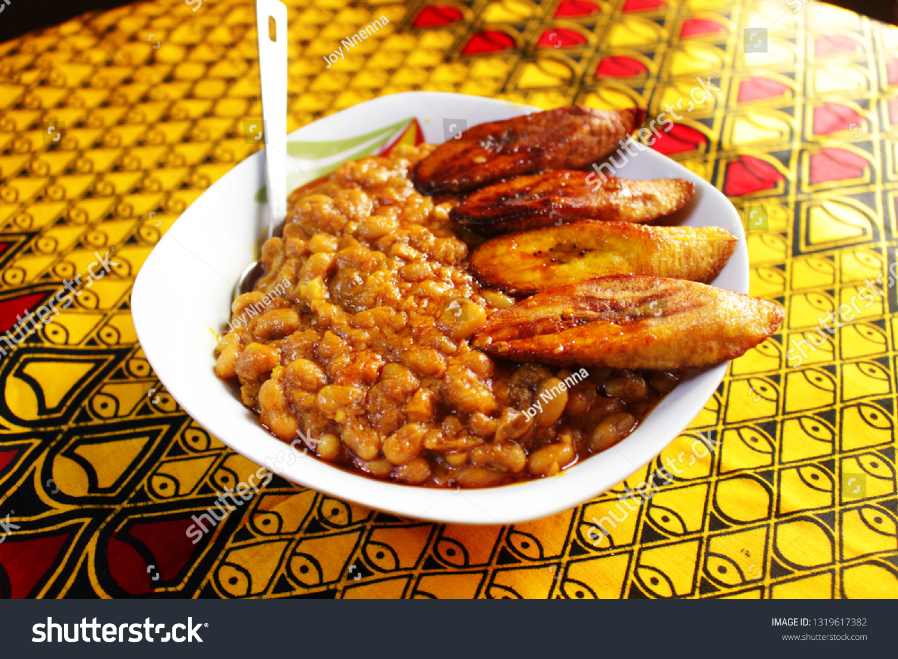
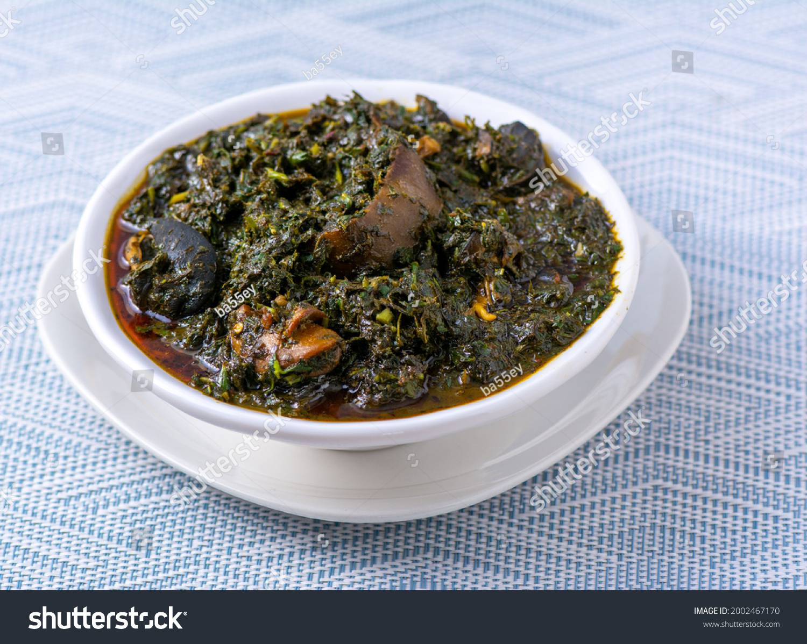
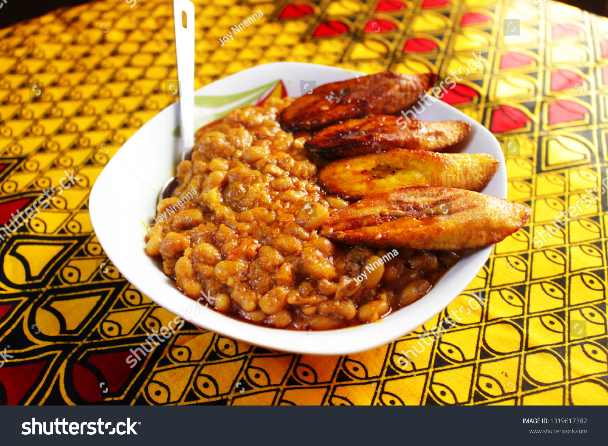
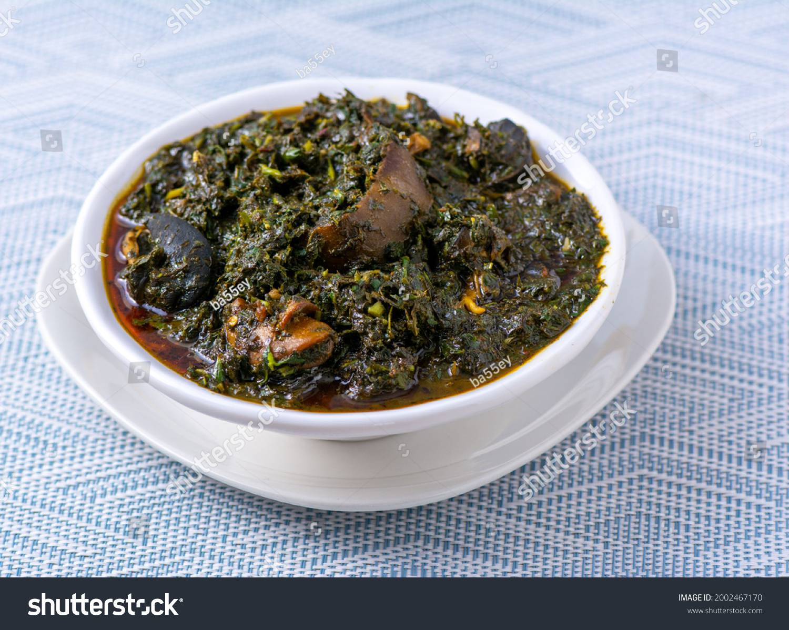
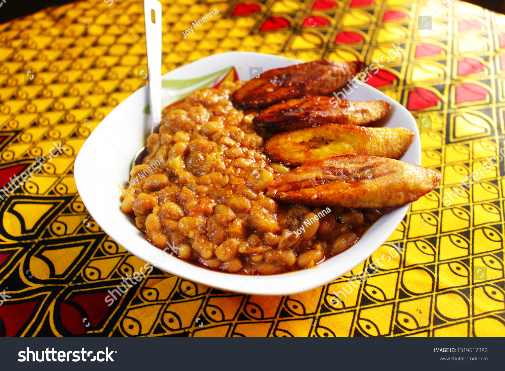

Odin Recipes
Hello there,
foodstar,
it's a wonderful day for you to learn how to cook some good Nigerian food!
 
Let us teach you how to cook a delicious
Fried Rice
meal!
OR, you might want to get the knowledge of the
efik goddesses
, to make great, tasty
Afang Soup!
As well, discover the best
beans and dodo (plantain)
recipe
 


